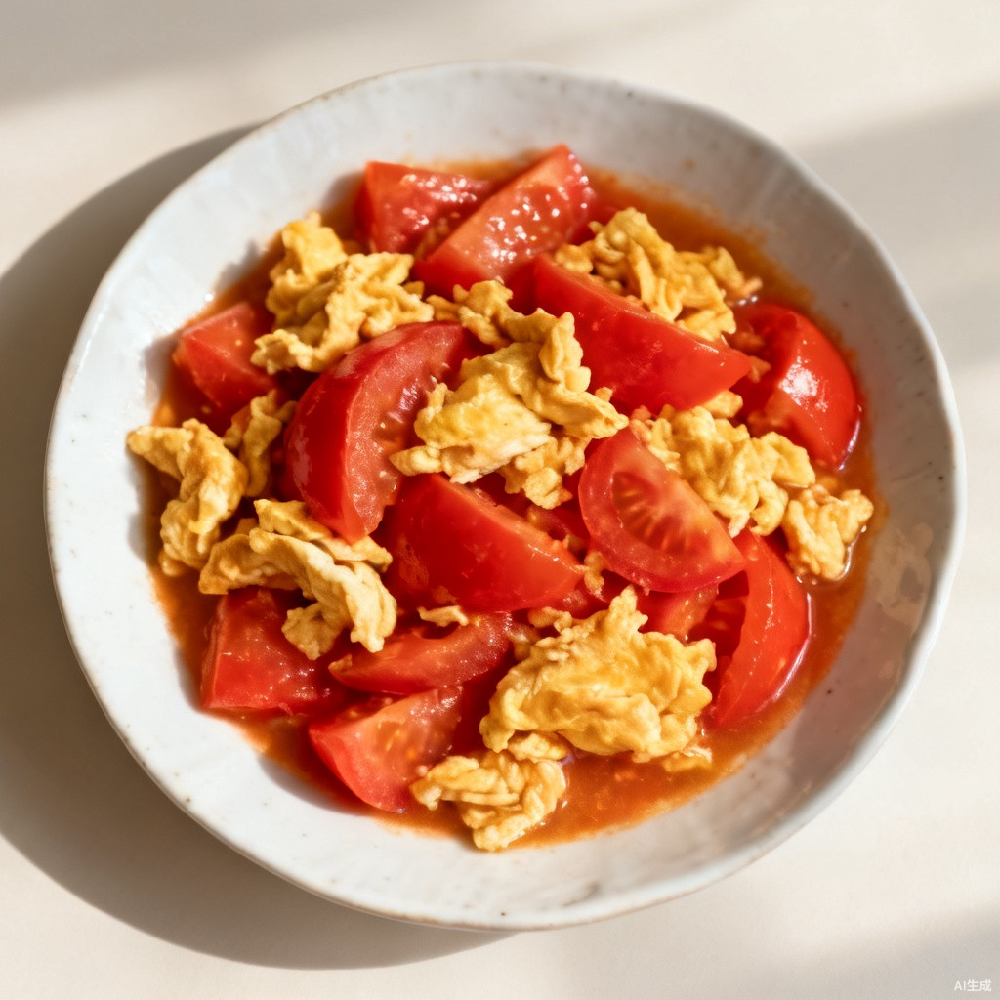

全套屏原型 · 方向① v3 网格卡片风 · S-10 记一笔（餐卡弹层演示）
‹ 返回首页
记一笔 · 今日晚餐
做完一餐点「记一笔」，就地三问不跳页
演示态：弹层已打开
晚餐
约 18:00 开饭
下一餐
清蒸鲈鱼
蒸 12 分钟 · 刺少适合孩子

番茄炒蛋
炒 15 分钟 · 孩子爱吃
晚餐吃得怎么样？
只记这一餐 · 评价可选，漏评不追
做了没？
做了
没做
好吃吗？
好吃
一般
翻车
下次还做吗？
还做
不做了
实际耗时
选填
15 分钟内
30 分钟
50 分钟
取消
提交
演示态：已提交
记好了 ✓
晚餐 · 做了 · 好吃 · 下次还做——评价进推荐依据，好评的菜以后常安排
示意图·正式版为试做实拍